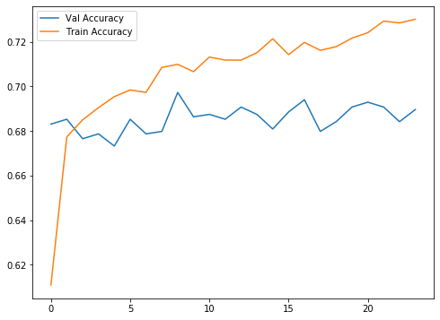
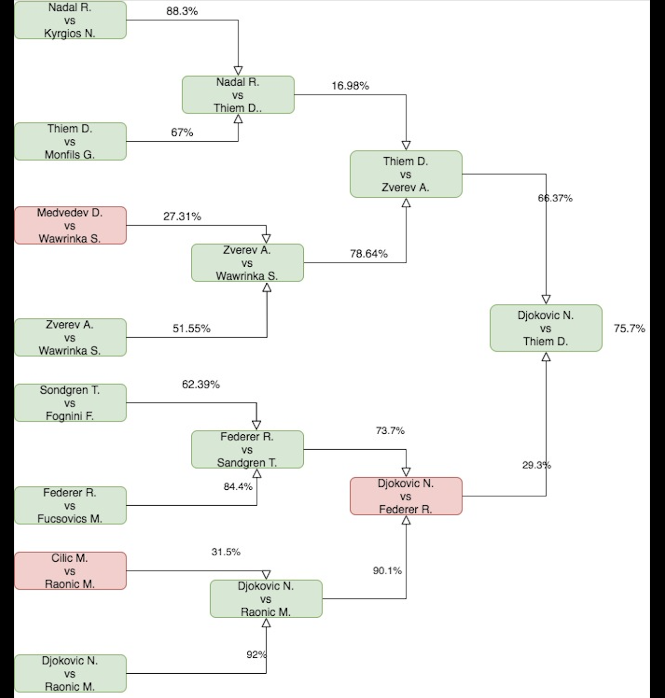

- Sat 08 February 2020
- Sports
- Rittik Ghosh
- #Neural Network, #Classification
I was introduced to tennis when I was very young by my grandfather and have distinct memories of watching Sampras, Agassi, and Hingis. While I no longer avidly follow the sport, I wanted to use a neural network to predict tennis matches and see how it performs when compared with the results of the recently concluded Australian Open. Data was gathered from here. I decided to use data from 2015 onwards. At the time of writing, data for the Australian Open itself had not been uploaded to the site, so these matches would be unseen for our model. Comparative results on the last few rounds can be found at the bottom of this post.
The dataset marks out the winner and loser, we reset the winner and all his associated metrics such as rank to be player one. Similarly, all metrics associated with the loser are set to player two.
def player_one(Winner,WRank,Loser,LRank):
if WRank<LRank:
return Winner
else:
return Loser
def player_two(Winner,WRank,Loser,LRank):
if WRank<LRank:
return Loser
else:
return Winner
def player_one_rank(Winner,WRank,Loser,LRank):
if WRank<LRank:
return WRank
else:
return LRank
def player_two_rank(Winner,WRank,Loser,LRank):
if WRank<LRank:
return LRank
else:
return WRank
data['player_one']=data.apply(lambda row: player_one(row['Winner']
,row['WRank'], row['Loser'], row['LRank']), axis=1)
data['player_two']=data.apply(lambda row: player_two(row['Winner']
,row['WRank'], row['Loser'], row['LRank']), axis=1)
data['player_one_rank']=data.apply(lambda row: player_one_rank(row['Winner']
,row['WRank'], row['Loser'], row['LRank']), axis=1)
data['player_two_rank']=data.apply(lambda row: player_two_rank(row['Winner']
,row['WRank'], row['Loser'], row['LRank']), axis=1)
The question we are essentially asking is "Will the higher-ranked player win?" Based on our data it turns out that the higher-ranked player wins 63.7% of the time.
To capture the player's form, we create features that represent his performance over the last year. We look at the overall win rate as well as win rates by surface and length of the match (3 or 5 sets). I introduced UUIDs into the dataset to have a "primary key" that can be used to join different data frames that represent computations and slices of the original data.
def cal_player_stats(name,date,uuid):
three=0.0
five=0.0
clay=0.0
hard=0.0
grass=0.0
try:
temp=data[(data.player_one==name) | (data.player_two==name)]
cutoff_date=date-pd.Timedelta(days=365)
temp=temp[temp.Date>cutoff_date]
if (len(temp)==0):
return
else:
d={}
for i in temp['Best of'].unique():
d[str(i)]=(len(temp[(temp['Best of']==i) & (temp.outcome==1)]))/(len(temp[temp['Best of']==i]))
for i in temp.Surface.unique():
d[i]=(len(temp[(temp.Surface==i) & (temp.outcome==1)]))/(len(temp[temp.Surface==i]))
if '3' in d:
three = (d['3'])
if '5' in d:
five = (d['5'])
if 'Grass' in d:
grass = (d['Grass'])
if 'Hard' in d:
hard = (d['Hard'])
if 'Clay' in d:
clay = (d['Clay'])
return pd.Series([uuid,name,date,cutoff_date,np.sum(temp.outcome==1)/len(temp),len(temp), clay, grass, hard, three, five])
except Exception as e:
exc_type, exc_obj, exc_tb = sys.exc_info()
print(exc_tb.tb_lineno, name, date)
x=data[(data.Date>='2016-01-01')].apply(lambda row: cal_player_stats(row['player_one']
,row['Date'], row['uuid']), axis=1)
We also compute the same statistics on player vs player basis to evaluate past matches between the two players.
def calc_rate(x,y):
if (x+y)>0:
return x/(x+y)
return 0.0
def onevtwo(player_one_name,player_two_name,cut_off_date,uuid):
three=0.0
five=0.0
clay=0.0
hard=0.0
grass=0.0
win_rate=0.0
total=0.0
d={}
try:
temp=data[data.Date>cut_off_date]
wins=temp[(temp.Winner==player_one_name) & (temp.Loser==player_two_name)]
losses=temp[(temp.Loser==player_one_name) & (temp.Winner==player_two_name)]
total=len(wins)+len(losses)
if total >0:
win_rate= len(wins)/total
for i in temp['Best of'].unique():
d[str(i)]=calc_rate(len(wins[wins['Best of']==i]),len(losses[losses['Best of']==i]))
for i in temp.Surface.unique():
d[i]=calc_rate(len(wins[wins.Surface==i]),len(losses[losses.Surface==i]))
if '3' in d:
three = (d['3'])
if '5' in d:
five = (d['5'])
if 'Grass' in d:
grass = (d['Grass'])
if 'Hard' in d:
hard = (d['Hard'])
if 'Clay' in d:
clay = (d['Clay'])
return pd.Series([uuid,player_one_name,cut_off_date,win_rate,total, clay, grass, hard, three, five])
except Exception as e:
exc_type, exc_obj, exc_tb = sys.exc_info()
print(exc_tb.tb_lineno, player_one_name, cut_off_date)
Since we are looking at the Australian Open, we are going to use only data on matches played on hard surfaces. The DataFrameMapper below gives an overview of the input features and the transformations applied to each of them.
mapper = DataFrameMapper([
(['player_one_rank'], [StandardScaler(),SimpleImputer()]),
(['player_two_rank'], [StandardScaler(),SimpleImputer()]),
('Best of', LabelEncoder()),
(['one_win_rate_year'],StandardScaler()),
(['one_games_played_year'], StandardScaler()),
(['one_hard_year'], StandardScaler()),
(['one_three_year'], StandardScaler()),
(['one_five_year'], StandardScaler()),
(['two_win_rate_year'],StandardScaler()),
(['two_games_played_year'], StandardScaler()),
(['two_hard_year'], StandardScaler()),
(['two_three_year'], StandardScaler()),
(['two_five_year'], StandardScaler()),
('major', LabelEncoder()),
(['one_win_rate_vv'],StandardScaler()),
(['one_games_played_vv'],StandardScaler()),
(['one_hard_vv'],StandardScaler()),
(['one_three_vv'],StandardScaler()),
(['one_five_vv'],StandardScaler()),
(['two_win_rate_vv'],StandardScaler()),
(['two_games_played_vv'],StandardScaler()),
(['two_hard_vv'],StandardScaler()),
(['two_three_vv'],StandardScaler()),
(['two_five_vv'],StandardScaler()),
], df_out=
True)
#topology
m = Sequential()
m.add(Dense(units=64, activation='relu', input_shape=(len(Z_train.columns),)))
m.add(Dropout(0.2))
m.add(Dense(units=32, activation='relu'))
m.add(Dropout(0.2))
m.add(Dense(units=16, activation='relu'))
m.add(Dropout(0.2))
m.add(Dense(units=8, activation='relu'))
m.add(Dropout(0.2))
m.add(Dense(units=1, activation='sigmoid'))
m.compile(loss='binary_crossentropy', optimizer='adam', metrics=['accuracy'])
model_checkpoint=ModelCheckpoint('data/best_model.h5', monitor='val_accuracy', mode='max',
verbose=2, save_best_only=True)
early_stop = EarlyStopping(monitor='val_accuracy', min_delta=0, patience=15)
hist = m.fit( Z_train,y_train,
batch_size=128,
validation_data=(Z_test, y_test),
epochs=175,
callbacks=[early_stop,mc],
verbose=1)

We do beat our naive estimate of 63.7%, the best model scores an accuracy of 69.3% on our test set. I was hoping for better results but in my opinion, given the unpredictable world of sports this result should be construed as not bad.
Results:

The nodes colored green represent correct predictions while those colored red represent incorrect ones. Each vertice has a probability associated with it. This is the probability predicted by our model for the true outcome to occur. As expected, for red nodes, the model predicts a probability of less than 50%.
There are opportunities to better engineer our features and bring in new data points and I look to forward to improving this score in the next iteration.